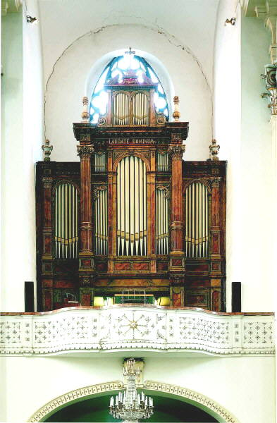
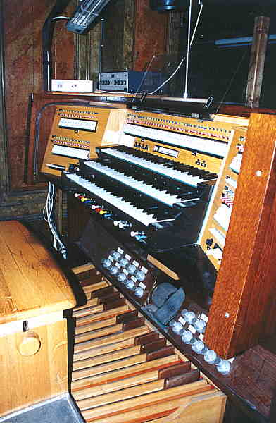
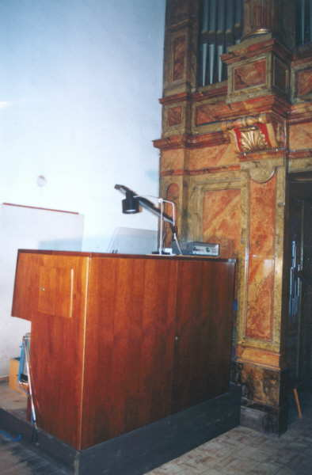
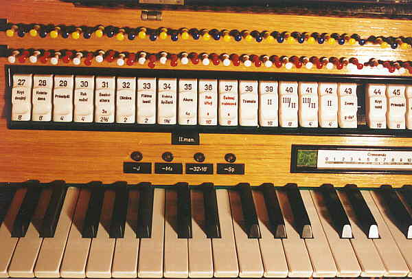
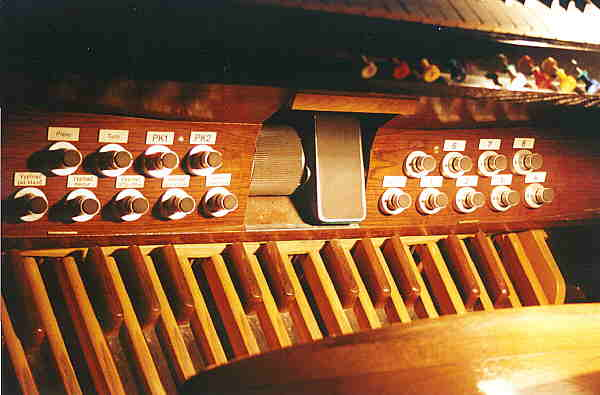
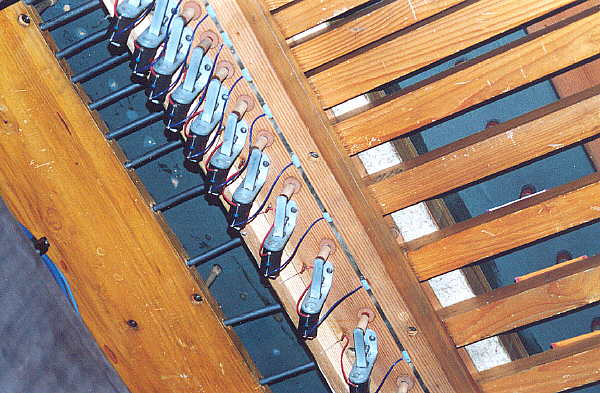
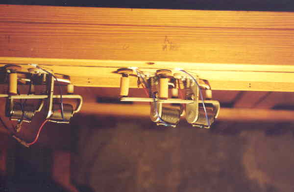
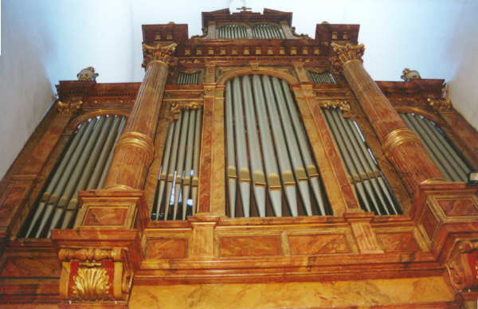

Rieger-Kloss, opus 3635
|  | |
Varhany v opavské konkatedrále postavila v roce 1892 krnovská firma Gebrüder Rieger (původní nástroj shořel při požáru v roce 1758, další nástroje v konkatedrále postavili anonym v roce 1764 a opavský varhanář Karel Kutter v roce 1863). Nástroj měl 31 rejstříků. V roce 1957 byly varhany rozšířeny na 51 znějících hlasů (Rieger - Kloss opus 3231), tónová i rejstříková traktura byla pneumatická, vzdušnice kuželková. Při následující generální opravě v roce 1991 byl nástroj přestavěn a rozšířen (56 rejstříků, 5381 píšťal, elektrická traktura) do současné podoby firmou Varhany Krnov (Rieger - Kloss opus 3635). Dispozice: |
| I.
manuál - Hlavní stroj |
II.
manuál - Horní pozitiv |
III.
manuál - Žaluziový stroj |
||||||
| C - a3/a4, 58 kláves, 70 tónů |
C
- a3/a4, 58 kláves, 70 tónů
|
C
- a3/a4, 58 kláves, 70 tónů
|
||||||
| 1. |
Principál | 16' |
27. |
Kryt dvojitý | 8' |
44. |
Kryt tichý | 16' |
| 2. |
Kryt špičatý | 16' |
28. |
Kvintadena | 8' |
45. |
Principál | 8' |
| 3. |
Principál | 8' |
29. |
Principál | 4' |
46. |
Kryt dřevěný | 8' |
| 4. |
Principál italský | 8' |
30. |
Roh noční | 4' |
47. |
Salicionál | 8' |
| 5. |
Flétna dutá | 8' |
31. |
Seskvialtera 3x | 2 2/3' |
48. |
Vox celestis 1-2x | 8'+8' |
| 6. |
Flétna trubicová | 8' |
32. |
Oktáva | 2' |
49. |
Oktáva | 4' |
| 7. |
Gamba špičatá | 8' |
33. |
Flétna lesní | 2' |
50. |
Flétna trubicová | 4' |
| 8. |
Oktáva | 4' |
34. |
Kvinta špičatá | 1 1/3' |
51. |
Nasard | 2 2/3' |
| 9. |
Flétna zobcová | 4' |
35. |
Akuta 4x | 1' |
52. |
Kvintadecima | 2' |
| 10. |
Kvinta | 2 2/3' |
36. |
Roh křivý · | 16' |
53. |
Tercie | 1 3/5' |
| 11. |
Oktáva flétnová | 2' |
37. |
Šalmaj trubicová · | 8' |
54. |
Mixtura 5-7x | 1 1/3' |
| 12. |
Mixtura velká 5-6x | 2' |
38. |
Tremolo II. man. | |
55. |
Dolkán | 1' |
| 13. |
Mixtura malá 4x | 1' |
39. |
III/II | 16' |
56. |
Cymbál kvintový 3x | 1/2' |
| 14. |
Fagot · | 16' |
40. |
III/II | 8' |
57. |
Trubka ext. · | 8' |
| 15. |
Trompeta · | 8' |
41. |
III/II | 4' |
58. |
Eufon · | 8' |
| 16. |
Trompeta ext. · | 4' |
42. |
II | 4' |
59. |
Vox humana · | 8' |
| 17. |
Kornet 3-5x | 2 2/3' |
43. |
Zvony g0 - dis2 | |
60. |
Clairon · | 4' |
| 18. |
III/I | 16' |
61. |
Tremolo III. man. | ||||
| 19. |
II/I | 16' |
62. |
III | 4' |
|||
| 20. |
III/I | 8' |
||||||
| 21. |
II/I | 8' |
||||||
| 22. |
III/I | 4' |
||||||
| 23. |
II/I | 4' |
||||||
24. |
I | 4' |
||||||
| Pomocná
zařízení |
Pedál |
|||||||
| (jako rejstříkové
sklopky) |
C - f1, 30 kláves i tónů | |||||||
| 25. |
Zapínač ručních rejstříků do volných kombinací a kolektivů | 63. |
Bas akustický 2x | 32'+16' |
75. |
Kontrafagot · | 32' |
|
| 64. |
Principálbas | 16' |
76. |
Pozoun · | 16' |
|||
| 65. |
Apertabas | 16' |
77. |
Fagot ext. · | 16' |
|||
| 26. |
Vypínač jazyků | 66. |
Subbas | 16' |
78. |
Trompeta basová · | 8' |
|
| 67. |
Burdonbas | 16' |
79. |
Klarina ext. · | 4' |
|||
| 68. |
Kvintbas | 10 2/3' |
80. |
III/P | 8' |
|||
| 69. |
Oktávbas | 8' |
81. |
II/P | 8' |
|||
| 70. |
Flétna basová | 8' |
82. |
I/P | 8' |
|||
| 71. |
Bas šumivý 4x | 5 1/3' |
83. |
III/P | 4' |
|||
| 72. |
Chorálbas | 4' |
84. |
II/P | 4' |
|||
| 73. |
Mixtura 5-7x | 2' |
85. |
I/P | 4' |
|||
74. |
Roh noční | 2' |
86. |
Zvony G - dis1 | |
|||
| Pomocná zařízení | ||||||||
| 8 volných kombinací: | Žaluzie III. manuálu | |||||||
| 4 na hracím stole | Crescendový válec | |||||||
| 4 po stranách hracího stolu | Vypínače jednotlivých jazyků | |||||||
| Pevné kombinace: | ||||||||
| Pléno, Tutti | ||||||||
| 2 pedálové kombinace | ||||||||
| |
|
|
||||||
|  |  |
|
Hrací stůl a jeho umístění
v rámci kůru.
|
|
Hrací stůl je situován na boku kůru, varhaník má
prospekt varhan před sebou vlevo a výhled jak do hlavní lodi kostela,
tak přes stůl i na celý prostor kůru (dirigenta, sbor, orchestr...). Ovládání
registrace se děje pomocí rejstříkových sklopek, volné kombinace se programují
pomocí čtveřic barevně odlišených tahélek nad každou ze sklopek. Vyvolání
navolené kombinace je možné buďto pomocí opět barevně rozlišených tlačítek
pod prvním manuálem nebo pistony nad prahem pedálu: |
|  |  |
|
Rejstříkové sklopky a tahélka
kombinací.
|
Pistony, válec crescenda a
šlapka žaluzií.
|
Při poslední přestavbě nástroje v roce 1991 byla
(kromě přidání 5 rejstříků a dalších změn) odstraněna pneumatická traktura
mezi hracím stolem a vzdušnicí (až po ventil relé pod kuželkami) a nahrazena
trakturou elektrickou (páčkové elektromagnety, elektronický ukazatel roztočení
válce crescenda, tranzistorová relé paměťových kombinací). Vzdušnice zůstaly
bez úpravy, ovládací elektromagnety byly namontovány přímo místo demontovaných
míšků pneumatiky. Zpřesnil a zrychlil se tím značně chod traktury, zvýšila
se její spolehlivost a otevřela se cesta k budoucím modernizacím (hracího
stolu - např. programovatelné kombinace) bez nutnosti dalších zásahů do
vlastního nástroje. |
|  |  |
|
Pohled na vzdušnici zespodu.
|
Detail páčkových elektromagnetů
traktury.
|
|  |
|
Detail prospektu.
|
Varhany v opavské konkatedrále imponují nejen svým
zvukem, ale i svými rozměry (výška prospektu ve střední části přesahuje
8m). I když se jejich původní ráz několika přestavbami změnil, zachovávají
si stále originální charakter i zvuk. Jsou využívány nejen k liturgickým
účelům (konkatedrála - tj. vedlejší katedrála Ostravsko - Opavské diecéze),
ale také jako koncertní či soutěžní nástroj festivalů a soutěží. Jejich
zvuk najdeme i na několika CD nahravkách. |
Zvuk těchto varhan si můžete vychutnat
např. na nahrávce "Job pro varhany" - Petr
Eben, hraje Tomáš Thon, recituje Radovan Lukavský (vydal Supraphon v roce
1996). |